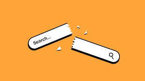

The Death of the Search Bar: How AI Prompts Are Replacing Google Tabs
For twenty years, the "Ten Blue Links" defined how we bought things online. You searched, opened five tabs, compared prices, and eventually clicked 'Buy.' In 2026, that journey is officially dead. Industry data shows that consumers are now starting with prompts, not keywords, using AI agents to shortlist products before they ever visit a brand's website.

From Search to Recommendation
The shift is dramatic. AI tools are compressing the consumer decision journey by combining discovery, comparison, and recommendation into a single conversational interaction. Instead of navigating multiple marketplaces, users describe what they need "I need a durable hiking boot for wet terrain under $150" and the AI does the heavy lifting.
This means the quality of traffic reaching e-commerce platforms has changed. Visitors are no longer "browsers"; they are "deciders" who have already vetted your product through an AI agent.
Machine-Readability is the New SEO
As AI systems increasingly influence product recommendations, "Product Visibility" now depends on machine readability. It's no longer enough to have a pretty website for humans; your product data must be structured so an AI can interpret it with 100% confidence. If your specs aren't clear, you simply won't exist in the AI's shortlist.